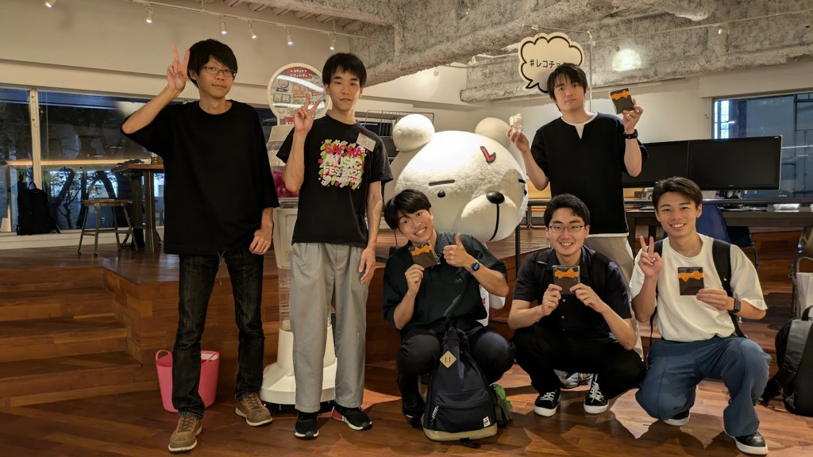

About
三澤大輝について
筑波大学大学院で研究をしています。AIを使って身近な作業を楽にすることや、違う専門を持つ人と一緒に何かをつくることに関心があります。2026年9月には、仲間と筑波AIハッカソンを初めて開催しました。
Current Lanes
いま伸ばしている領域
Journey
これまで
Selected Work
活動と、考えていること
Vision
Vision
AIによって、人が本来向き合うべき活動に集中できる環境をつくる。自動化と知能化を通じて、情報の整理・判断・実行を支援し、一人ひとりが創造的で意味のある活動に時間を使える社会を目指します。

Future Dream
いつか、ドラえもんをつくりたい。
ドラえもんのように、人に寄り添い、必要なときに力になれる存在が実現する未来。その実現に、僕も関わりたい。
小学4年生の「将来の夢」を書く機会に、僕はその夢をまっすぐ書きました。先生には少し冗談のように受け取られましたが、親はその夢を笑わず、守ってくれました。振り返ると、あの経験が、今も新しいことにワクワクして挑戦する自分につながっている気がします。
ドラえもんをつくるという夢には、いろいろな専門を持つ仲間が必要です。研究と開発を重ねながら、ハッカソンやコミュニティを通じて、一緒に未来を考え、つくる人と出会っていきたいと思っています。
Contact
連絡先
研究、AI、イベントなど、興味の近い方と話せたらうれしいです。